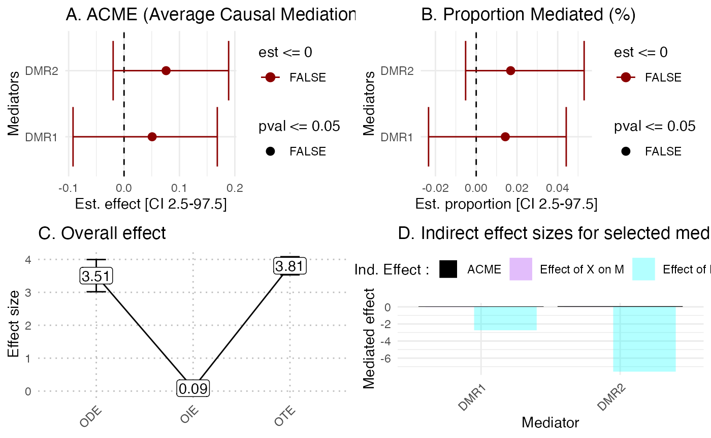

helper_functions.RmdThe {} package is designed to accept exposure \(X\) consisting of univariate data, which can be continuous, binary, or categorical, as well as multivariate exposomes. Binary variables are converted to 0s and 1s and treated as univariate variables.
In this vignette, we provide a series of helper function to process the data.
To install the latest version of hdmax2, use the github repository
#devtools::install_github("bcm-uga/hdmax2")We simulated 500 samples and 1000 potential DNA methylation mediators, with various a binary exposure (smoking status of mothers) and continuous outcomes (birth weight).
data = hdmax2::helper_ex
pc <- prcomp(data$methylation)
plot(pc$sdev[1:15]^2,
xlab = 'Principal Component',
ylab = "Explained variance",
col = c(rep(1, 3), 2, rep(1, 16)))
K=5
## run hdmax2 step1
hdmax2_step1 = hdmax2::run_AS(X_matrix = as.matrix(data$exposure),
Y_matrix = as.matrix(data$phenotype),
M_matrix = as.matrix(data$methylation),
K = K,
X_type = "univariate",
Y_type = "continuous")
#> [1] "All exposome columns are in numeric format."
#> [1] "Running first regression with univariate explanorty variable."
#> [1] "Running second regression."
#> [1] "Running max-squared test."
#> [1] "Not generating max2 pvalues for each explanatory variable."
##Detecting AMR
chr = data$annotation$chr
start = data$annotation$start
end = data$annotation$end
pval = hdmax2_step1$max2_pvalues
cpg = data$annotation$cpg
res.amr_search = hdmax2::AMR_search(chr = data$annotation$chr,
start = data$annotation$start,
end = data$annotation$end,
pval = hdmax2_step1$max2_pvalues,
cpg = data$annotation$cpg,
seed = 0.2,
nCores = 2)
res.amr_search$res
#> chr start end p fdr
#> 5 1 1406862 1407200 2.693314e-05 0.0001346657
#> 3 1 1261809 1261810 1.148453e-03 0.0020616844
#> 2 1 1234367 1234377 1.237011e-03 0.0020616844
#> 1 1 1156263 1156264 1.927767e-03 0.0023346338
#> 4 1 1310734 1310988 2.334634e-03 0.0023346338
res.arm_build = hdmax2::AMR_build(res.amr_search,
methylation = data$methylation,
nb_cpg = 2)
#List of DMR selected
head(res.arm_build$res)
#> DMR chr start end p fdr nb
#> 1 DMR1 1 1406862 1407200 2.693314e-05 0.0001346657 4
#> 2 DMR2 1 1310734 1310988 2.334634e-03 0.0023346338 2
##CpG in the DMR
res.arm_build$CpG_for_each_AMR
#> $DMR1
#> [1] "cg10228629" "cg06377929" "cg10240778" "cg04286729"
#>
#> $DMR2
#> [1] "cg11518257" "cg15617543"
## run hdmax2 step2
object = hdmax2_step1
mediators_top10 = data$methylation[,names(sort(hdmax2_step1$max2_pvalues)[1:10])]
m = as.matrix(res.arm_build$AMR_mean)
boots = 100
sims = 100
## selected mediators effects estimation
hdmax2_step2 = hdmax2::estimate_effect(object = hdmax2_step1,
m = m,
boots = 100,
sims = 100)
#> [1] "Estimating indirect effect for univariate exposome."
#> [1] "Computing ODE and OTE for continuous outcome."
hdmax2::plot_hdmax2(hdmax2_step2, N_med = 2)
#> [1] "hdmax2 plot for univariate exposome"
## run hdmax2 step1
hdmax2_step1 = hdmax2::run_AS(X_matrix = as.matrix(data$exposure),
Y_matrix = as.matrix(data$phenotype),
M_matrix = as.matrix(data$methylation),
K = K,
X_type = "univariate",
Y_type = "continuous")
#> [1] "All exposome columns are in numeric format."
#> [1] "Running first regression with univariate explanorty variable."
#> [1] "Running second regression."
#> [1] "Running max-squared test."
#> [1] "Not generating max2 pvalues for each explanatory variable."
## Select candidate mediator
qval <- fdrtool::fdrtool(hdmax2_step1$max2_pvalues, statistic = "pvalue", plot = F, verbose = F)$qval
candidate_mediator <- qval[qval<= 0.5] # In this example, we will consider FDR levels <50%.
candidate_mediator
#> cg11144217 cg22798412 cg00656410 cg27310827 cg05598010
#> 0.4751104 0.4751104 0.4751104 0.4751104 0.4751104
simu_data = hdmax2::simu_data
X_matrix = simu_data$X_categorial
X_matrix = droplevels(X_matrix)
X_matrix = mltools::one_hot(data.table::as.data.table(X_matrix))
X_matrix = as.matrix(X_matrix)
sessionInfo()
#> R version 4.2.3 (2023-03-15)
#> Platform: aarch64-apple-darwin20.0.0 (64-bit)
#> Running under: macOS Monterey 12.2.1
#>
#> Matrix products: default
#> BLAS/LAPACK: /Users/richamag/miniconda3/envs/hdmax2/lib/libopenblas.0.dylib
#>
#> locale:
#> [1] fr_FR.UTF-8/fr_FR.UTF-8/fr_FR.UTF-8/C/fr_FR.UTF-8/fr_FR.UTF-8
#>
#> attached base packages:
#> [1] stats graphics grDevices utils datasets methods base
#>
#> loaded via a namespace (and not attached):
#> [1] nlme_3.1-164 bitops_1.0-7 fs_1.6.3
#> [4] GenomeInfoDb_1.34.9 tools_4.2.3 backports_1.4.1
#> [7] bslib_0.6.1 utf8_1.2.4 R6_2.5.1
#> [10] rpart_4.1.23 Hmisc_5.1-1 BiocGenerics_0.44.0
#> [13] colorspace_2.1-0 nnet_7.3-19 withr_3.0.0
#> [16] tidyselect_1.2.0 gridExtra_2.3 compiler_4.2.3
#> [19] fdrtool_1.2.17 textshaping_0.3.7 cli_3.6.2
#> [22] htmlTable_2.4.2 desc_1.4.3 sandwich_3.1-0
#> [25] labeling_0.4.3 sass_0.4.8 scales_1.3.0
#> [28] checkmate_2.3.1 mvtnorm_1.2-4 pkgdown_2.0.7
#> [31] systemfonts_1.0.5 stringr_1.5.1 digest_0.6.34
#> [34] foreign_0.8-86 minqa_1.2.6 rmarkdown_2.25
#> [37] XVector_0.38.0 base64enc_0.1-3 pkgconfig_2.0.3
#> [40] htmltools_0.5.7 hdmax2_0.0.0.9000 lme4_1.1-35.1
#> [43] fastmap_1.1.1 highr_0.10 htmlwidgets_1.6.4
#> [46] rlang_1.1.3 rstudioapi_0.15.0 prettydoc_0.4.1
#> [49] jquerylib_0.1.4 generics_0.1.3 farver_2.1.1
#> [52] zoo_1.8-12 jsonlite_1.8.8 dplyr_1.1.4
#> [55] RCurl_1.98-1.14 magrittr_2.0.3 GenomeInfoDbData_1.2.9
#> [58] Formula_1.2-5 Matrix_1.6-5 Rcpp_1.0.12
#> [61] munsell_0.5.0 S4Vectors_0.36.2 fansi_1.0.6
#> [64] lifecycle_1.0.4 stringi_1.8.3 yaml_2.3.8
#> [67] MASS_7.3-60.0.1 zlibbioc_1.44.0 mediation_4.5.0
#> [70] grid_4.2.3 parallel_4.2.3 crayon_1.5.2
#> [73] lattice_0.22-5 Biostrings_2.66.0 splines_4.2.3
#> [76] knitr_1.45 pillar_1.9.0 boot_1.3-28.1
#> [79] lpSolve_5.6.20 stats4_4.2.3 glue_1.7.0
#> [82] evaluate_0.23 data.table_1.15.2 vctrs_0.6.5
#> [85] nloptr_2.0.3 gtable_0.3.4 purrr_1.0.2
#> [88] cachem_1.0.8 ggplot2_3.5.0 xfun_0.42
#> [91] ragg_1.2.7 tibble_3.2.1 mltools_0.3.5
#> [94] memoise_2.0.1 IRanges_2.32.0 cluster_2.1.6